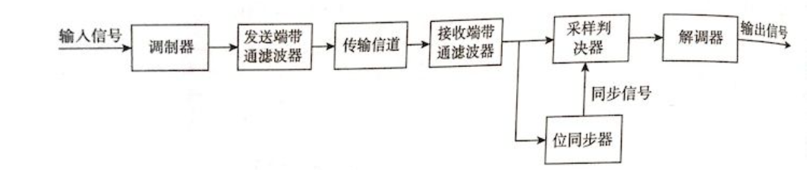

计算机网络第二章
更新时间线
- 将自己写的有关于物理层的知识搬运到blog上来了
- 报文交换待补充
物理层
参考的笔记
计算机网络笔记(四)——物理层 - 知乎 (zhihu.com)
目录：
-
:sparkles:数字信号传输限制
- :sparkles::exclamation:码间干扰
- :sparkles::exclamation:[Nyquist Law 奈奎斯特定律](#Nyquist Law 奈奎斯特定律)
- :sparkles::exclamation:[Shannon 香农定律](#Shannon 香农定律)
考纲要求
- 通信基础
- 传输介质
- 物理层设备
考试重点：
掌握的概念有:信道、信号、宽带、码元、波特、速率、信源与信宿、编码与调制、电路交换、报文交换与分组交换、数据报与虚电路等基本概念。
物理层的主要作用（理解）
-
构建物理上的数据通路
-
透明传输： 网络中的各方不用在意数据通路中的传输介质…… （相关标准以及通信协议的功能；）
-
数据传输：
-
数据编码 【不太明白】【为了确保数据比特流能在对应的信道中正常通过，需要对数据编码。不同的传输介质所支持的数据编码类型不一样(如归零码、非归零码、曼彻斯特码、差分曼彻斯特码等】
-
流量管理：【对在信道上传输的比特流进行管理……】
物理层的主要特性
-
机械特性： 接口的引脚数目、传输介质的种类……
-
电器特性： 传输在数据链路上的信号的特征。【暂时这么理解。】
-
功能特性：【】电平的含义
-
规程特性：
通信基础：
资源子网和通信子网
资源子网
- 存放网络中各种数据资源的;
- 局域网中：由网络服务器、工作站（个人电脑）、共享的打印机设备……所有存储数据资源的设备 以及与网络传输无关的功能设备组成。
- 广域网中：所有的主机以及外部设备组成。
通信子网
- 管理通信的相关设备以及软件。
- 局域网：网关、网桥、集线器、路由器你、中继器、交换机
- 广域网：专用的通信处理机。
通信子网的种类
-
点点通信子网
-
广播通信子网
数据通信的基本模型
信源、信道、信宿
- 信源 发送信息
- 信道 传输信息
- 信宿 接收信息
数据通信基本概念
- 信息
- 数据
- 信号
- 信道
数据传输的类型
- 基带信号
- 宽带信号
基带传输
- 将01 信号变换成数字信号发出
- 经常用于局域网 近距离
基带传输系统
频带（宽带）传输 passband transmission
- 将基带传出的信号使用分频复用的方式转换为模拟信号 传输出去 需要添加调制解调器。
- 经常用于广域网 速度更快 传输距离更远。
频带传输系统

数据传输方式
- 串行传输
- 并行传输
数据传输模式
字符串同步
解决串行传输中正确识别串行传输流中的数据。
- 同步传输
- 异步传输
数据通信方式
- 单向通信
- 半双工通信
- 全双工通信
数据传输速率与信道带宽
波特率 衡量 模拟信号中的数据传输速率
比特率 衡量 数字信号中的数据传输速率
码元：
被传输的数据是二进制的 码元是一段时间内包含的二进制
例如：
1 | # 传输比特流： |
波特率、速率、带宽
-
速率：
-
比特率 比特传输速率
b/s【单位时间内传输的二进制代码的有效比特位 用Rb表示】 -
波特率 码元传输速率
Baud：波特率显示了单位时间内电平变换的频率 【单位时间内载波参数(如频率相位等)变化的次数，单位为B(Baud)，用RB表示。】
-
-
带宽：
单位时间通过的最高数据率。单位b/s
数字信号传输限制
数字信号不失真传输的最大速率限制
码间干扰
- 码间串扰
Nyquist Law 奈奎斯特定律
:exclamation: 理想低通信道上码元最高传输速率
任意一个信号通过一个带宽为k b/s 的信道 只要经过 2k次采样就能完重构被过滤掉的信号。
奈奎斯特采样定理（Nyquist） - MyCPlusPlus - 博客园 (cnblogs.com)
这个博客介绍了 二倍采样对原信号的复原 是个什么样的过程。
但是其中有一个 频率为1Hz的sin图像 对这个图像使用 2Hz的采样并没有很好地重构原信号。
Nyquist law 如果在采样点无法对准 波的峰值和谷值的时候是会出现不准确的
1 | 原因： |
Nyquist Law 存在的意义：
- 信源发送的信号 在信道上是一种 模拟信号，并且会有局部的抖动（噪声的干扰），当这些信号传入信宿的时候 我们首先通过傅里叶变换 拟合出一个最接近这个发送过来信号的 比较平滑的 模拟信号，再使用Nyquist采样定律 采样出数字信号。
- 模拟信号到数字信号的转换。
Nyquist Law 有关的题目：
【问题： 为什么一个相位上面的信号有多个电平 不同的电平代表了什么？】
Shannon 香农定律
有噪声的信道上信号传输的最大速率限制
-
信噪比：
-
Shannon 公式：
Nyquist 定律 和Shannon 定理之间的区别：
傅里叶分析：
- 将空域离散数据转换到频域上。
- 将离散的 数字信号 转换成 模拟信号 数字离散信息–> 物理信号 波信号。
物理层的传输媒体
- Magnetic Media
- DVDs
引导型传输媒体
- 双绞线 twisted pair 屏蔽双绞线 shielded twisted pair
- 光缆 Fiber cable
- 同轴电缆 Coaxial Cable
- 光纤 Fiber Optic
非引导型传输媒体
-
infrared 红外线
-
Radio 无线电传输
-
satellite 卫星
-
微波 在空间主要是直线传播
调制方法
-
调幅 AM Amplitude Modulation
-
调频 FM Frequency Modulation
-
调相 PM Phase Modulation
信道复用技术
Multiplexer
- 频分复用 Frequency Division Multiplexing
- 时分复用 Time Division Multiplexing
- Wavelength Division Multiplexing
- 统计时分复用 Statistical Time Division Multiplexing
电路交换
建立连接 - 通信 - 释放连接
- 特点：独占资源
advantage
- guaranteed data rate
- once connected no channel delay （通信延迟小）
- 有序传输
- 没有冲突
- 实时性强
disadvantages:
- inefficient use of the transmission media （利用率低）
- long connection delay (at the first time )
- 在第一次呼叫连接的时候有延迟
无差错控制
分组交换
- traits:
- The connection is determined only when there is actual data (a message) ready to be sent.
- The whole message is recollected at each switch and then forwarded on to the next switch.
store and forward（存储转发 动态分配线路）
无需建立连接
理解什么是存储转发！
线路利用率高 【这个容易理解】
多目标服务
- advantage:
- 相对电路交换 提高了带宽的利用率
- 能够根据网络情况调整数据发送线路
- 更短的传输延迟
- 重传的包更小
- disadvantage：
- 更复杂的协议 more complex protocol
- 对于分组发放的设备要求更强的计算能力
- 越多的数据包意味着更高的出错率（丢包率）
分组交换的两种方法
- 数据报分组交换
- 数据报分组交换的过程
message被分为包流 a stream of packets
每一个包都有自己的control instruction 控制
交换设备将每一个包分别发送
- 数据报分组交换的特点
交换设备能够绕过拥堵路段发送数据包
每个数据包需要一个字段来使得接受设备重组
Small packet size facilitates retransmission due to errors 【更小的包体 意味着更小的回传代价】
- 虚电路交换 （待补充！）